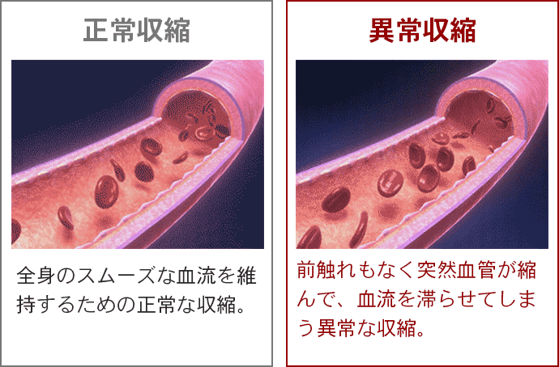
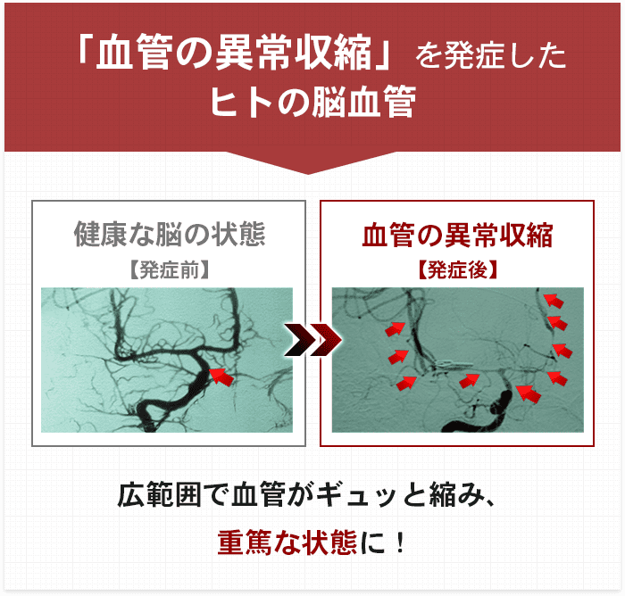
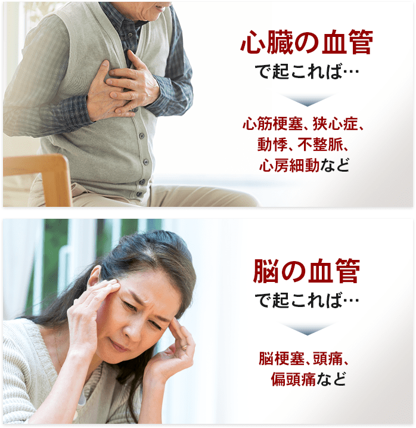

心筋梗塞や心房細動、動悸、不整脈と
あらゆる病気に悩んできた
元クリスタルキング田中昌之さんが、
血管病研究の第一人者、山口大学小林教授に直撃!
さまざまな血管病に悩んできた方にとって、
「小林式EPA」は強い味方になると思っております。
小林教授の研究成果がひとりでも
多くの方に届くことを願っています。
急性心筋梗塞で2度も倒れ、現在は4本のステントが入っている。原因は、週に3箱も吸うたばこだったと言う。健康には自信があったものの、突然胸に痛みを感じ救急車で緊急搬送。その間、心肺停止になり4度にわたるAED（電気ショック）でようやく蘇生。それ以来、タバコは吸っていない。
詳しいプロフィールを見る
1951年生まれ、佐賀県出身。『大都会』や『愛をとりもどせ！』など次々とヒット曲を出した、日本のロックバンド・クリスタルキングの元ボーカル。
循環器内科で救急の医師として現場に立っていたが、その現場では原因不明の難病により、理不尽にもなくなる方を目の当たりにしてきた。
「この原因不明の難病を解明したい」その一心で、研究の道に進みメカニズムの解明と、それを抑制する特別な食品成分「EPA」を発見。
詳しいプロフィールを見る
1980年九州大学医学部卒業後、同大学循環器内科入局。
米国医師国家試験（ECFMG）にも合格。1985年に世界で初めて、カルシウムイオンの測定に成功する。その後渡米し、ペンシルベニア大学、バージニア大学、九州大学の助教授を経て、1996年より山口大学で教授職を務める。
世界に先駆けて、血管病による突然死の主因となる「血管の異常収縮」の原因分子を発見し、そのメカニズムも解明。さらに特殊な立体構造のEPAによる阻害効果も発見。現在も『血管病の撲滅』を掲げ、日々研究を続けている。
血管病による突然死は、
「健康な人」でも起こります。
日本では、突然死で亡くなる方が年間約6万人。そのうち9割以上が「血管病」という報告があります。
毎年5万人以上の人が血管病で命を落としているのです。
血管病の原因として、一般的に知られているのが、生活習慣による生活の乱れやコレステロール値・動脈硬化。ところが、食生活もきちんとしていて、スポーツもしている方、健康診断の結果にも問題ない方にも、前触れなく突然亡くなってしまう方が存在します。それが、血管が突然けいれんするように縮んでしまう「血管の異常収縮」です。
そして、この「血管の異常収縮」は血管病による突然死の方のほとんどに関わるとされ、「治療法がなく、医学界でも原因不明の難病」と恐れられてきました。
血管の異常収縮は
身近な症状にも潜んでいる可能性が
血管の異常収縮はさまざまな病気や症状の原因と言われています。
「小林式EPA」によって
血管の異常収縮を劇的に抑制
長年研究してようやく辿り着いた成分が、生の青魚に含まれる「EPA」でした。
しかし、残念ながら「EPAならなんでも効果がある」というわけではなかったんですね。
いまのところ血管の異常収縮の抑制効果があると分かっているのが、我々が開発した「小林式EPA」だけなのです。
血管の異常収縮なんて言葉、初めて聞きましたよ。心筋梗塞や心房細動、不整脈、動悸に悩んできた私も、血管の異常収縮が起きていたかもしれないということですね。
そうですね、異常収縮は聞いたことないと思います。原因不明だと話題にもできないですからね。
ただ不安にさせてしまうだけなので。でも我々が長年研究した末に、血管の異常収縮を抑制できる特効薬「小林式EPA」を見つけたので、ご説明しますね。